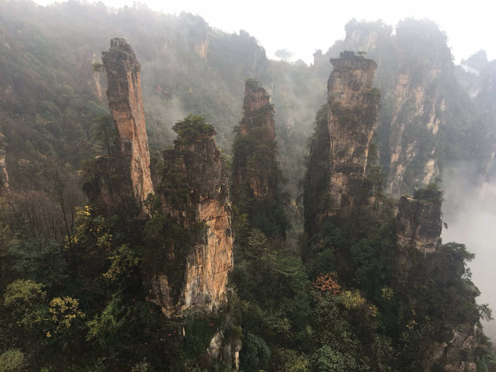
OUR NOVEMBER JOURNEY / 2026
China,
the scenic way.
From Hong Kong’s harbor to Shanghai’s skyline,
with river roads and mountain mornings in between.
Four places to call home.
Two full days in Hong Kong. A riverside pause in Yangshuo. Three nights in one Wulingyuan hotel. Then a Shanghai finish.
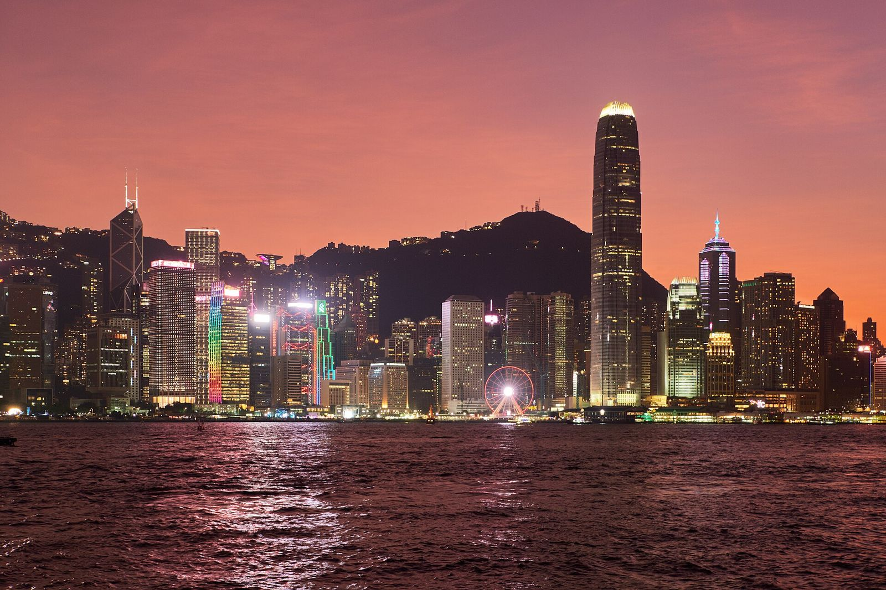
3 nightsHong Kong香港
Two full days for city streets, harbor lights and a hike to the coast.
Explore the days ↗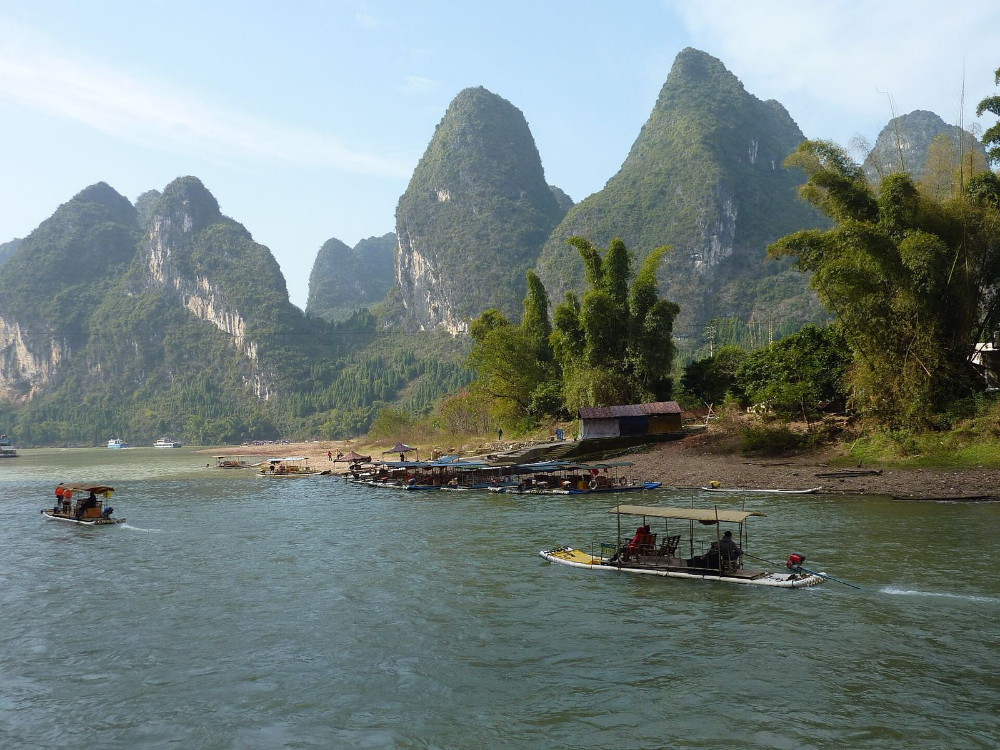
2 nightsYangshuo阳朔
River roads, village lanes and an unhurried day among karst peaks.
Explore the days ↗Wulingyuan武陵源
One hotel for all three nights, two forest days and Tianmen on departure day.
Explore the days ↗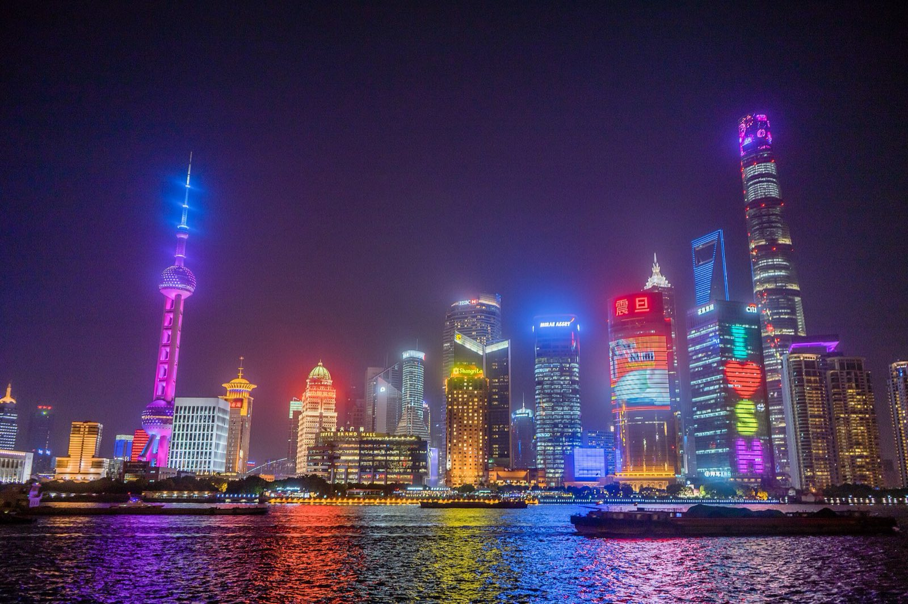
3 nightsShanghai上海
A garden, leafy neighborhoods and a skyline worth staying out for.
Explore the days ↗The days ahead.
Tap a day for the plan, its map, and the details that make the connections work.
11 nights · All times local, UTC+8 · Train, flight and hotel details still to be confirmed
A quiet landing
Night arrival · hotel transfer & rest
Arrive in Hong Kong at night. Transfer to your hotel, check in, and rest: two full Hong Kong days start tomorrow.
- Night arrival
Arrive in Hong Kong
Clear arrivals and collect your bags. Arrange the onward transfer around your actual landing time.
- After arrival
Hotel check-in & a late bite
Go directly to your hotel, check in, and have a simple meal nearby if you are hungry. Let the hotel know if check-in will be late.
- Tonight
Rest for tomorrow
Rest after the journey. Tomorrow is for city streets and harbor lights; the hike gets its own day on Sunday.
No sightseeing tonight. The city sights are on Nov 14 and Dragon’s Back with Shek O is on Nov 15. Your airport, exact landing time, and hotel are still to be added.
Overnight Hong Kong
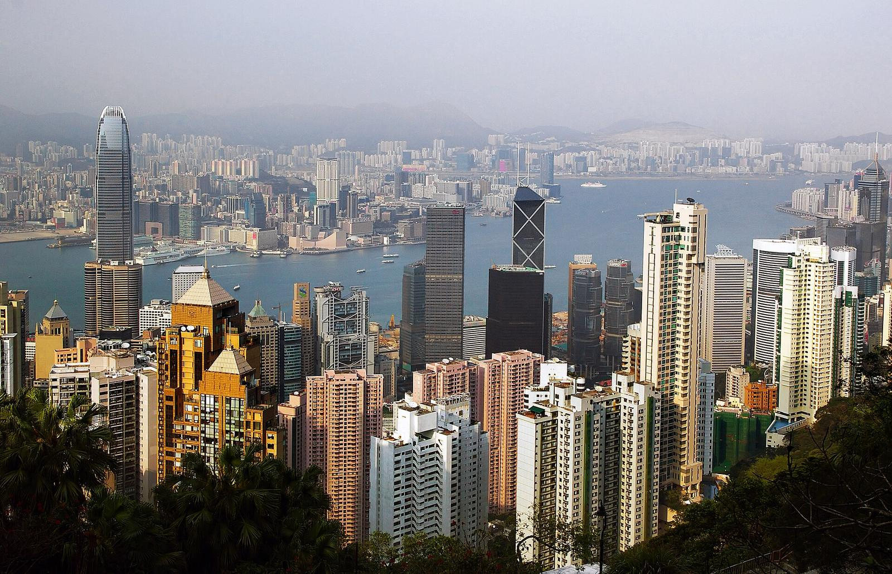
Day 02 / 12Hong Kong, from lanes to lights
Central · Sheung Wan · the Peak · Kowloon
A full day for the city: neighborhood lanes, views from the Peak, and the harbor after dark. Keep meals and coffee stops spontaneous.
- Morning
Central, slowly
Start with breakfast and a short walk through Central, keeping the first morning manageable after last night’s arrival.
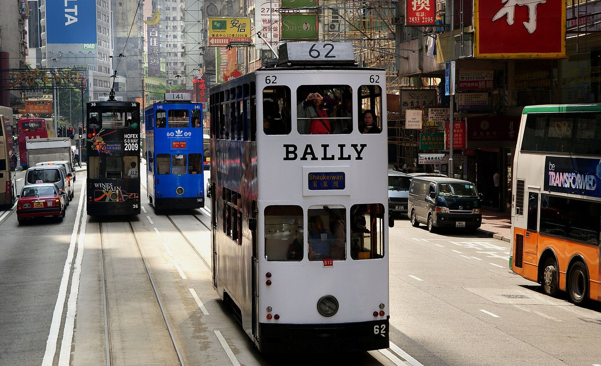
- Morning
Sheung Wan lanes
Continue into Sheung Wan for neighborhood lanes and a coffee before heading to the Peak.
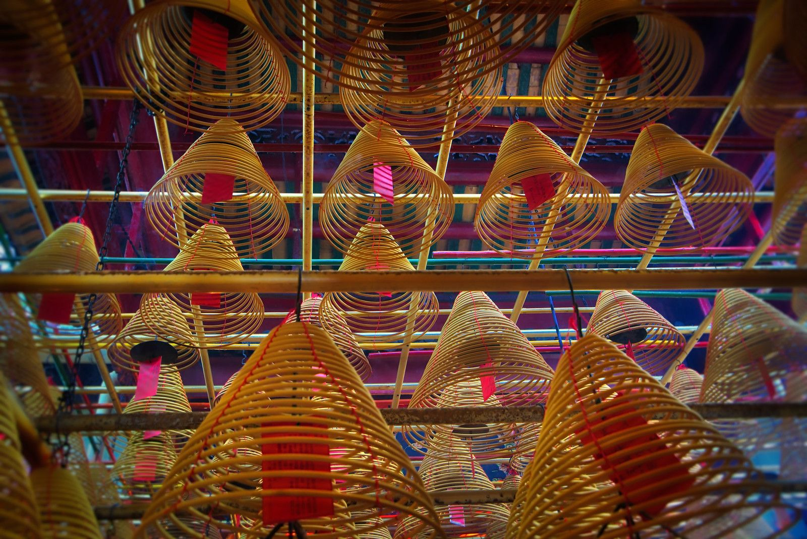
- Late morning
Victoria Peak
Go up for the view, allowing room for queues. Shorten the earlier walk if you would rather spend more time here.
- Afternoon
Kowloon & a food crawl
Cross to Kowloon and explore Mong Kok. Graze as you go, with flexible food stops rather than reservations.
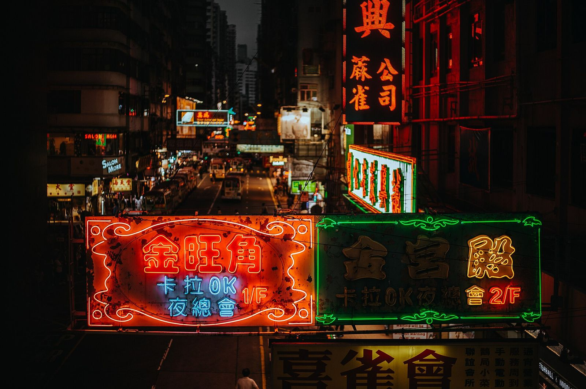
- After dark
Tsim Sha Tsui waterfront
Walk the harborfront for the skyline before a ferry crossing.
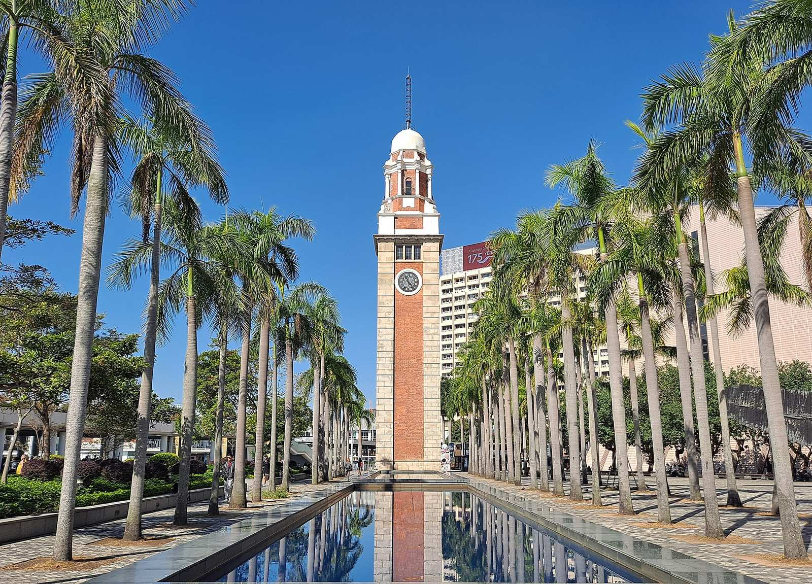
- Evening
Harbor lights & the Star Ferry
Cross from Tsim Sha Tsui to Central for skyline views from the water, then return to your hotel at your own pace.
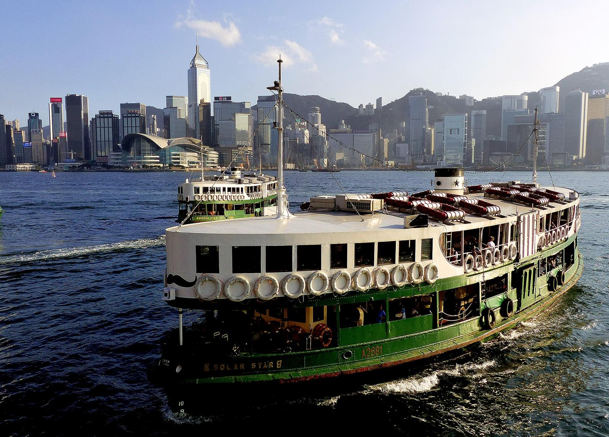
Keep the morning neighborhood walk short if Peak queues are long. Tomorrow stays in Hong Kong, so there is no train departure to rush back for.
Overnight Hong Kong
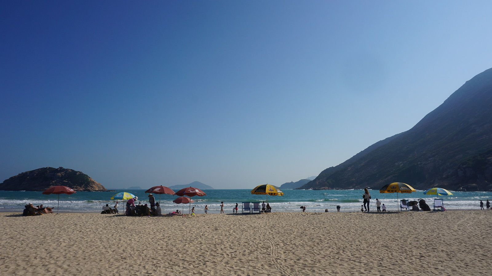
Day 03 / 12The greener side of Hong Kong
Dragon’s Back → Shek O
With a second full Hong Kong day, there is room for both the city and the coast. Walk the Dragon’s Back ridge, then slow down in Shek O.
- Morning
Dragon’s Back
Travel to the trailhead and enjoy the ridge walk. Choose your exact trail variant and transport after checking the weather. The pin marks the ridge area, not a trailhead or GPS track.
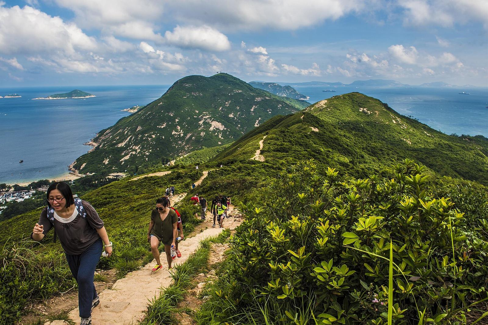
- Afternoon
Shek O beach & village
After the hike, transfer to Shek O for a relaxed beach and village afternoon before returning to the city.
- Optional evening
A harbor evening, if you have energy
Once back in the city, add a waterfront walk or Star Ferry crossing only if you feel like it. Otherwise have dinner near your hotel and pack for tomorrow’s train.
Use the hiking day for clear, dry weather. Swap Nov 14 and 15 locally if conditions favor it. After dinner, pack for the next morning’s train.
Overnight Hong Kong
From skyline to karst
Hong Kong → Guilin West → Yangshuo
A travel day with a soft landing in the countryside. Aim for an early train, then go directly to Yangshuo instead of spending the night in Guilin.
↗ Rail to Guilin West + car to Yangshuo · services to confirm
- Morning target
Train from Hong Kong West Kowloon
Book the service to Guilin West once sales open. Confirm the departure time and allow the station’s required check-in and border-processing buffer.
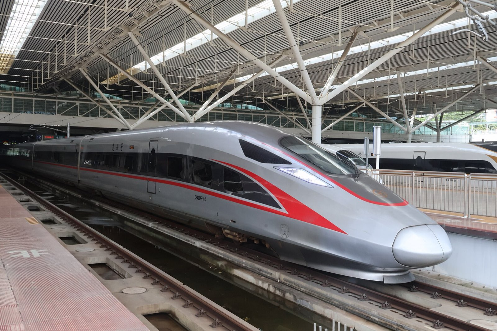
- On arrival
Guilin West → Yangshuo
Meet your prearranged driver at Guilin West and transfer directly to your Yangshuo accommodation.
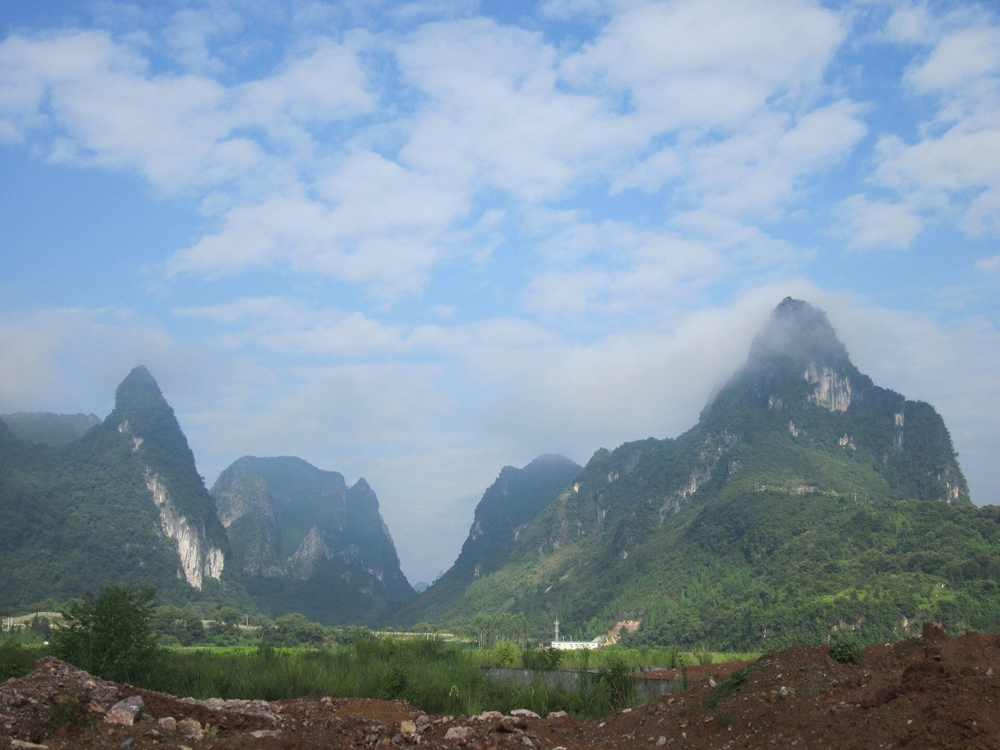
- Late afternoon
A gentle countryside introduction
After check-in, take a short walk or easy bike ride near your accommodation. This pin is Yangshuo town; choose the actual route with your hotel.
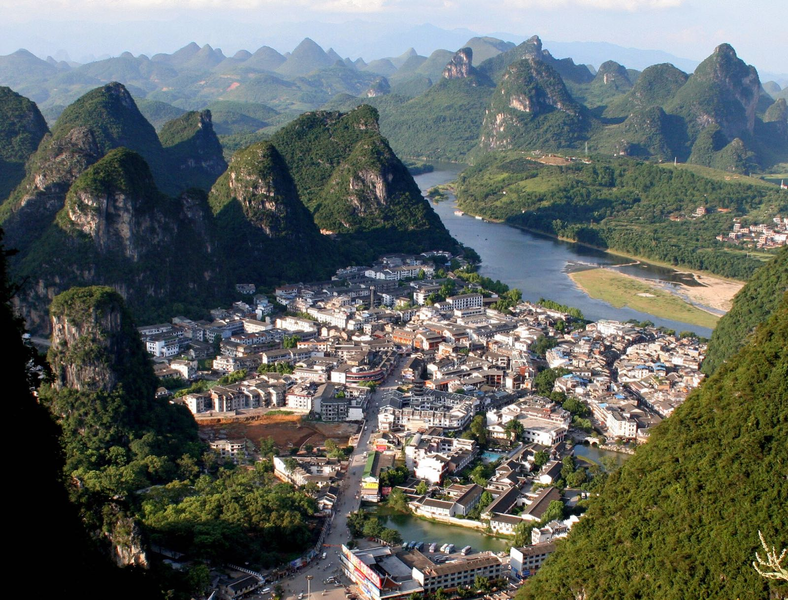
Morning is your departure target, not a confirmed train time. If the available service arrives later, shorten or skip the countryside outing.
Overnight Yangshuo
Along the Yulong River
Village roads, karst peaks & time on the water
Spend the day outside: an easy cycling loop through villages, a pause by the river, and a bamboo raft outing if conditions allow.
- Morning
Cycle the Yulong River countryside
Rent bikes and explore quiet village roads. Choose a loop that suits your hotel location and riding comfort.
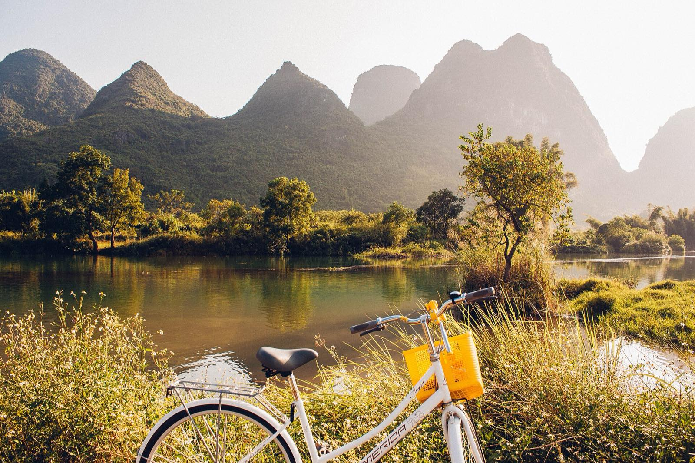
- Late morning
Yulong Bridge & village roads
Use the old bridge area as a scenic waypoint; stop for photos and a leisurely lunch along the way.
- Afternoon
Jiuxian village & bamboo rafting
Spend time around Jiuxian, then take a bamboo raft ride on an available Yulong River section. The pin marks the village, not a booked raft pier.
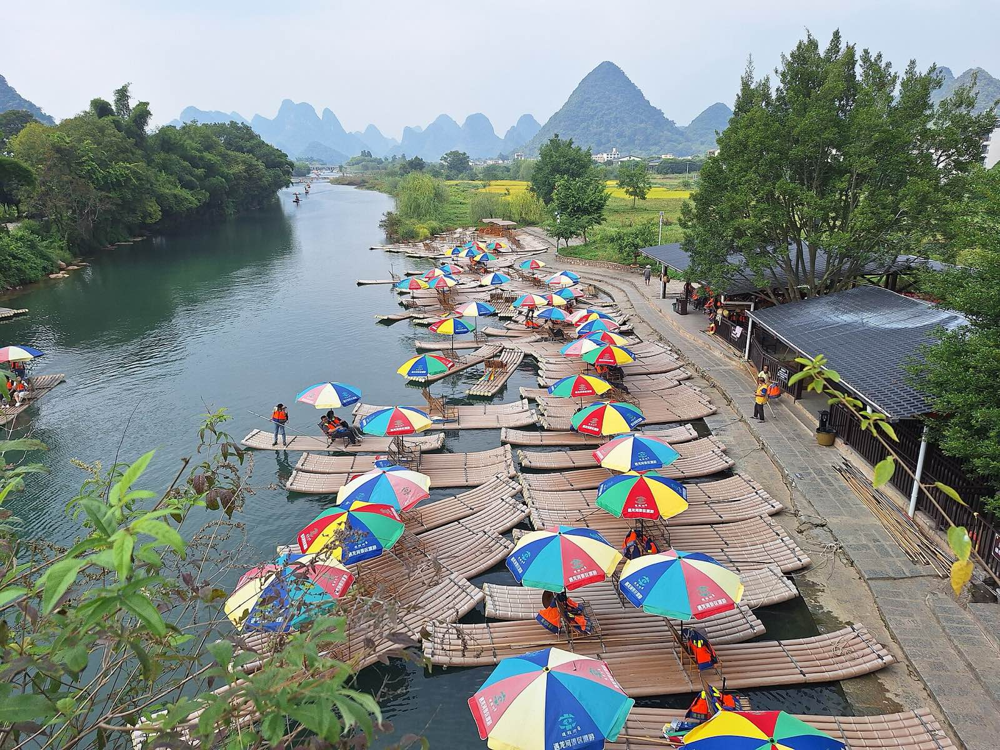
- Evening
Return to Yangshuo
Return the bikes and keep dinner easy before tomorrow’s long transfer.
The map is an area guide, not a cycling track. Finalize bike pickup, the raft pier and route, and the return transfer locally before setting off.
Overnight Yangshuo
North to the mountains
Yangshuo → Guilin → Zhangjiajie West → Wulingyuan
Treat this as a full transfer day. Arrange both cars ahead of time and give your Wulingyuan hotel your expected arrival time.
↗ Car + afternoon rail + car · late hotel check-in
- Morning
Transfer from Yangshuo to Guilin
Check out and take a prearranged car to the departure station shown on your train ticket. Leave room for traffic and the station buffer.
- Afternoon target
Train to Zhangjiajie West
Your planned afternoon rail leg is not yet booked. Confirm whether a direct train or a connection fits this date; keep the evening free for travel.
- Late arrival
Meet your driver at Zhangjiajie West
Have the driver track your actual arrival and agree a meeting point before traveling.
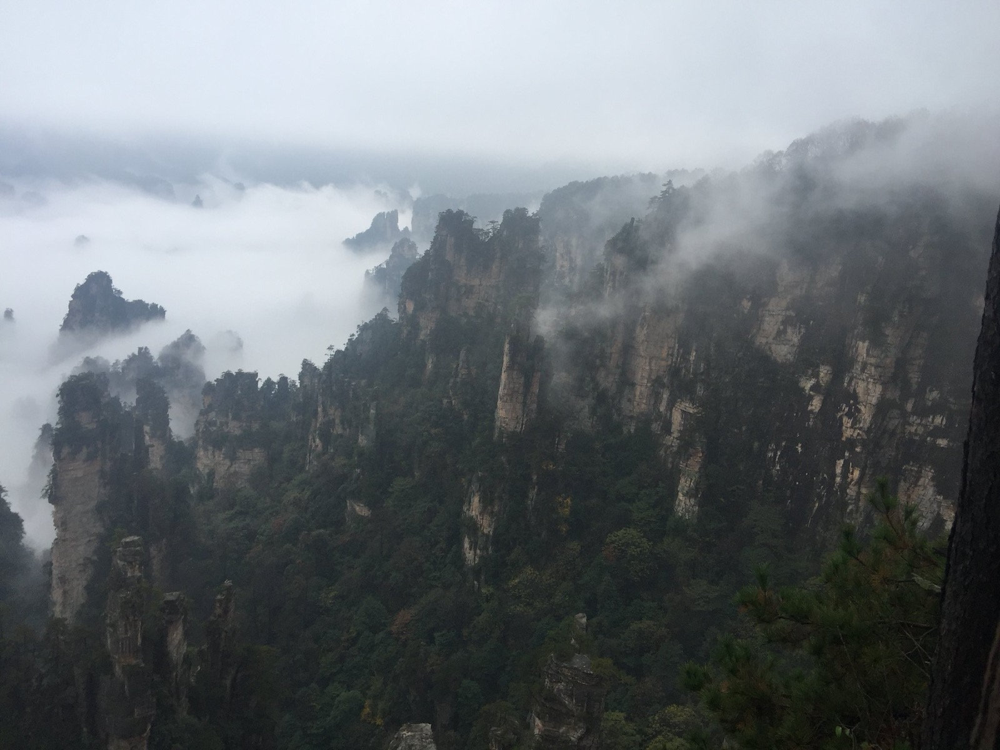
- Late check-in
Settle into Wulingyuan
Continue to your Wulingyuan hotel and check in late. Have the hotel arrange an easy dinner option if needed. The map shows the town center, not a hotel.
Confirm the exact Guilin departure station, train or connection, and arrival time before booking the pickup. Do not assume the onward train departs Guilin West.
Overnight Wulingyuan
Above the sandstone pillars
Yuanjiajie + Tianzi Mountain
Your first full forest park day is for the high viewpoints: the Avatar-like pillars of Yuanjiajie and the broad mountain views from Tianzi.
- Early start
Enter from the Wulingyuan side
Head to the forest park early with your entry and internal transport plan ready. The pin marks the Wulingyuan base area.
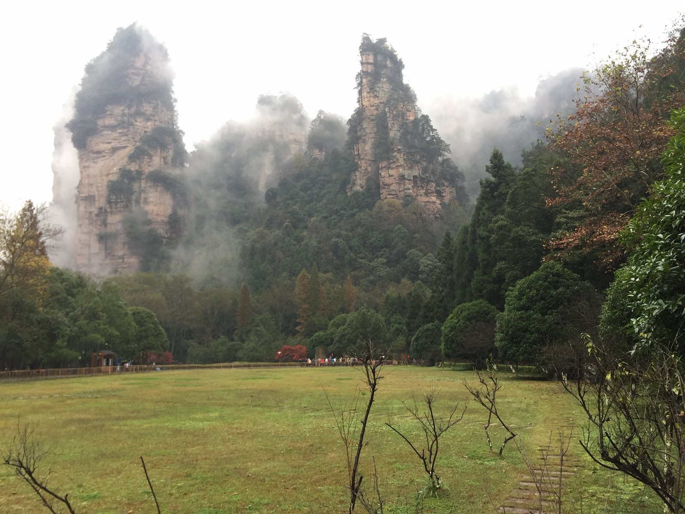
- Morning
Yuanjiajie: the Avatar mountains
Explore the pillar viewpoints and walking paths, allowing time to pause rather than racing between platforms.
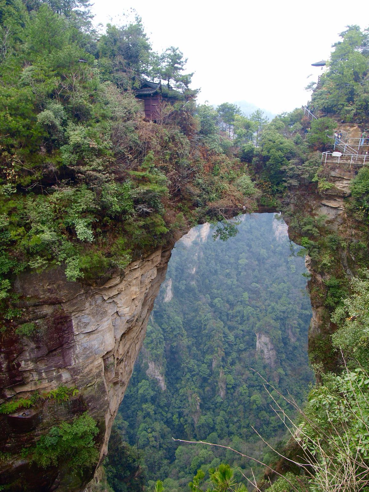
- Afternoon
Tianzi Mountain
Continue to Tianzi Mountain for a different perspective on the forest of stone peaks.
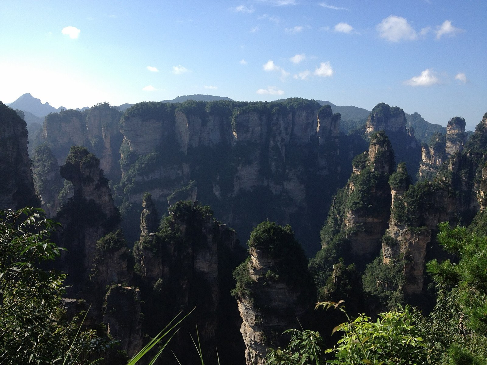
- Evening
Return to Wulingyuan
Stay at the same hotel tonight. Have a quiet dinner and prepare for another park day.
Plan the park entry, shuttle, lift and cableway sequence with your hotel the night before. Route order can change with queues, weather and operating arrangements.
Overnight Wulingyuan
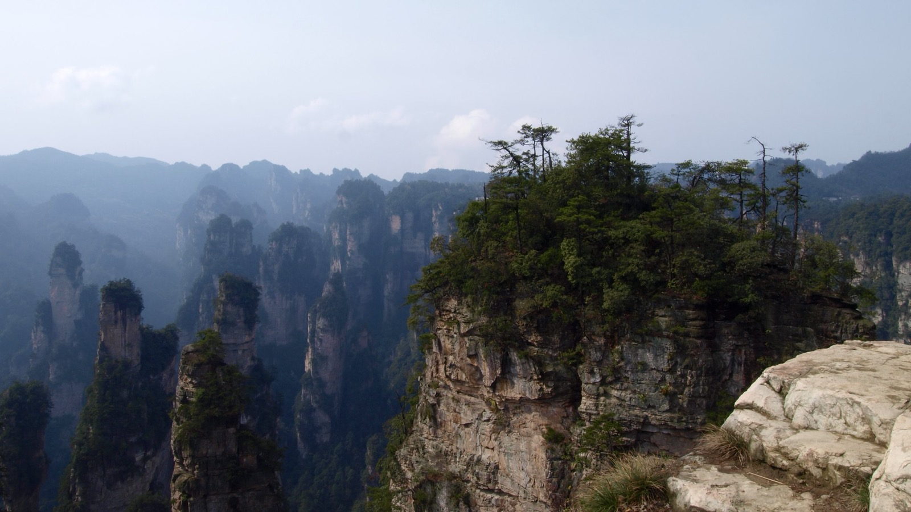
Day 08 / 12Down in the forest
Golden Whip Stream + Huangshizhai
A stream-level walk and another panorama, then back to the same Wulingyuan hotel. There is no hotel change tonight.
- Morning
Golden Whip Stream
Follow a manageable section of the stream-side path. The marker indicates the stream area; choose the exact start and finish locally.
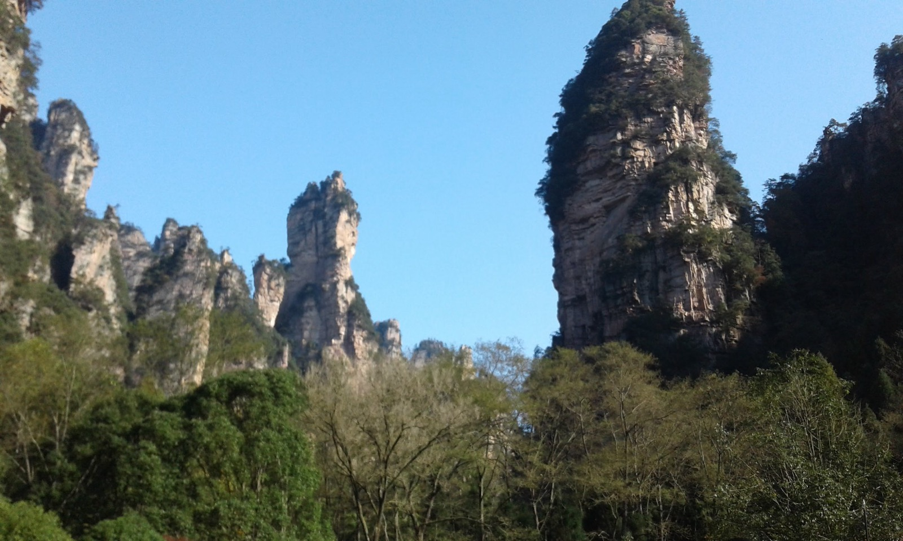
- Afternoon
Huangshizhai
Head to Huangshizhai for another panorama, choosing walking or cableway arrangements to match your energy and conditions.
- Evening
Back to the same Wulingyuan hotel
Have dinner and prepare for an early checkout. This is the third night at the same hotel.
Agree the park exit and return pickup with your hotel. Pack tonight and arrange tomorrow’s early car, Tianmen entry, luggage storage and airport transfer.
Overnight Wulingyuan
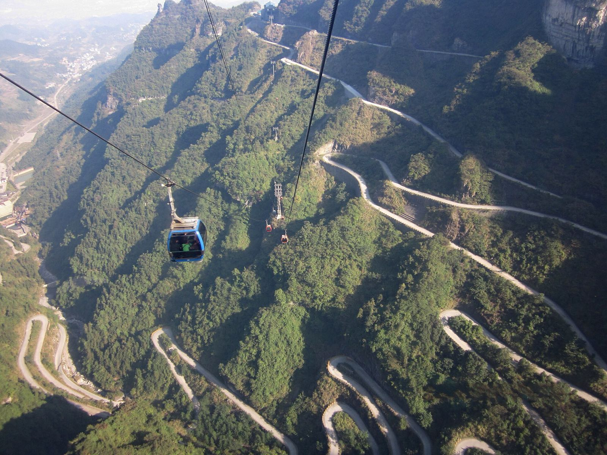
Day 09 / 12Tianmen, then on to Shanghai
Wulingyuan → Tianmen Mountain → Shanghai
Check out of your Wulingyuan hotel early and visit Tianmen on the morning of departure. Continue to Shanghai on the planned evening flight, without a hotel move the night before.
↗ Early car + morning Tianmen visit + planned evening flight
- Early morning
Check out & drive to Tianmen
Take your luggage when leaving Wulingyuan. Aim for the earliest available Tianmen entry; have your driver confirm the current Route C meeting point, which may differ from older downtown-cableway instructions.
- Morning → early afternoon
Tianmen Mountain · Route C
The current operator notice keeps Route C open while the main cableway is suspended for renovation. It uses the Tianmen Cave Express cableway and mountain escalators. Allow a generous half-day, with a firm finish time set by your flight.
- Afternoon
Lunch, luggage & airport transfer
Arrange luggage storage or a transfer provider’s luggage service in advance. Collect bags near Zhangjiajie city and continue to the airport; avoid a return to Wulingyuan. This pin marks the city, not a confirmed storage location.
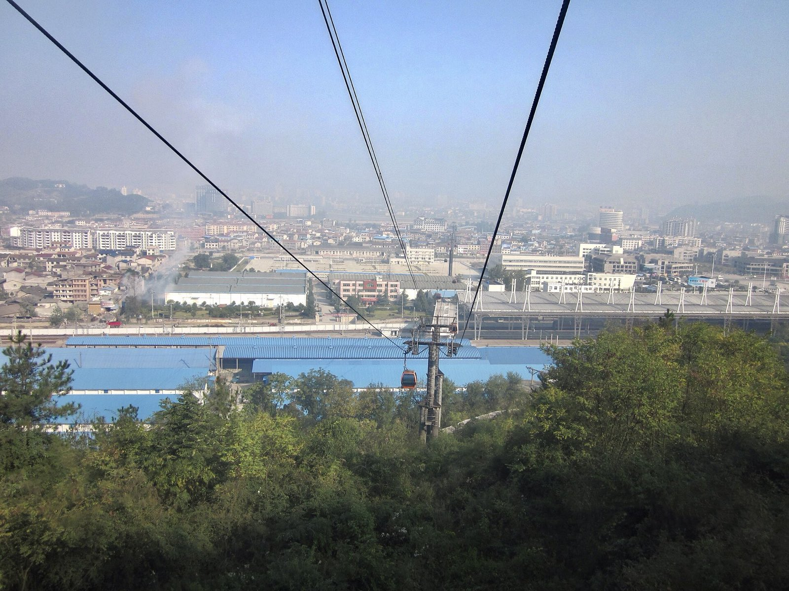
- Evening / night
Fly nonstop to Shanghai, if confirmed
The Nov 21 nonstop flight, departure time and Shanghai airport still need confirmation. Leave enough buffer for airport check-in and possible queues at Tianmen.
- Late check-in
Your Shanghai hotel
Hold the hotel night of Nov 21 even if the flight lands after midnight on Nov 22. Confirm late check-in with the hotel.
Prearrange a car and allow a generous transfer buffer. Plan roughly 75–90 minutes to the confirmed meeting point; this is a planning allowance, not a quoted journey time. Confirm the Nov 21 flight before committing to this sequence.
Overnight Shanghai · arrival after midnight
A slower start, a new skyline
Yu Garden → food stops → Pudong
Sleep in after the late flight. Keep Yu Garden on Sunday, then explore the old-city streets and Pudong’s riverfront at an unhurried pace.
- Late morning / early afternoon
Yu Garden
After a slower start, visit the garden before its afternoon last-entry cutoff. Leave time for the surrounding old-city lanes.
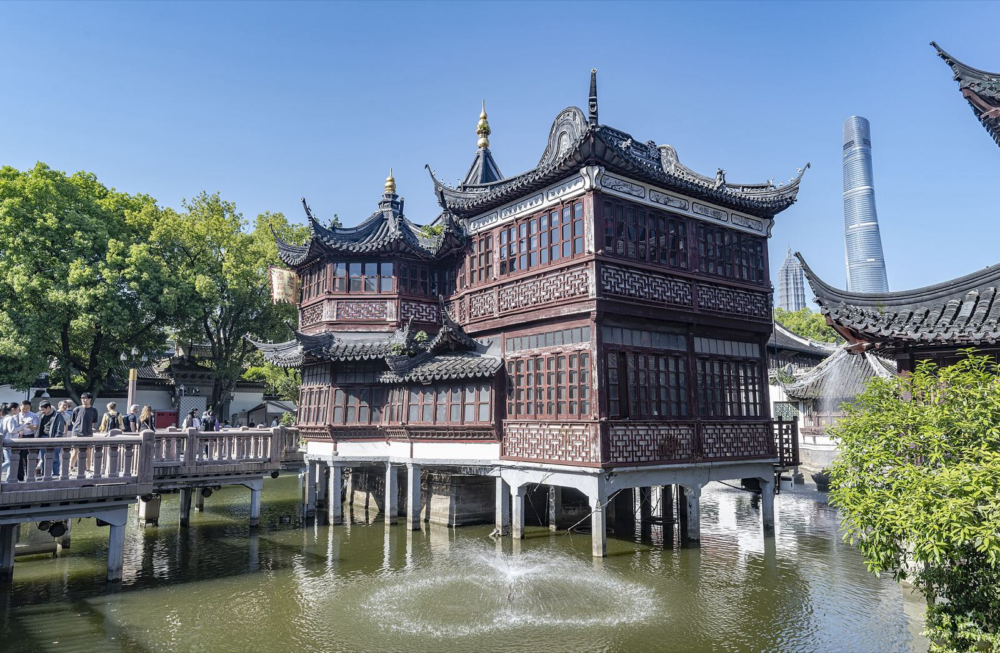
- Flexible lunch
Food stops around the old city
Leave the lunch stop open and browse the neighborhood at your own pace.
- Afternoon
Pudong riverfront
Head to Lujiazui and walk by the river for a view back across the Huangpu.
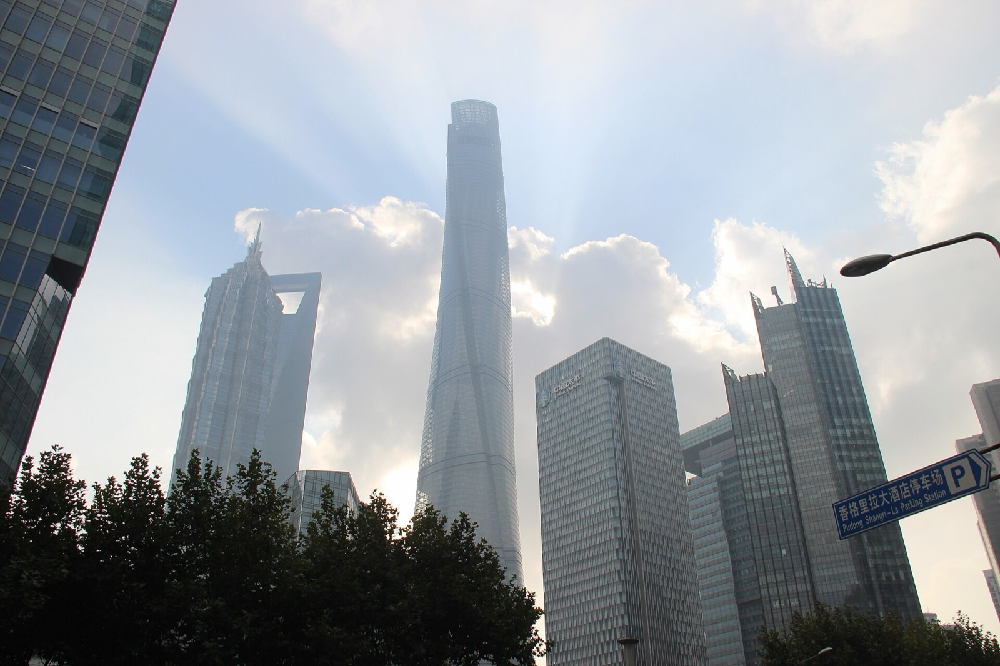
- Optional
An observation deck
Shanghai Tower is a possible deck choice, subject to tickets and visibility. Skip it if you prefer to stay outdoors.
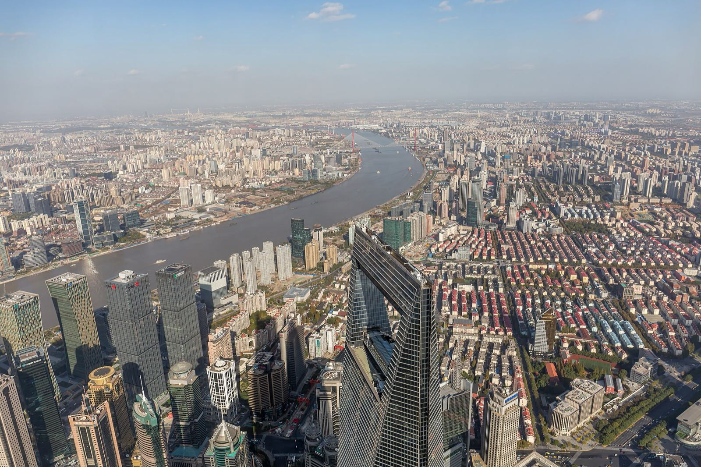
Yu Garden is normally closed on Mondays, so keep it today. Its current visitor page lists last entry at 16:00 and closing at 16:30; check your date before booking. If your arrival is delayed, prioritize the garden before the riverfront.
Overnight Shanghai
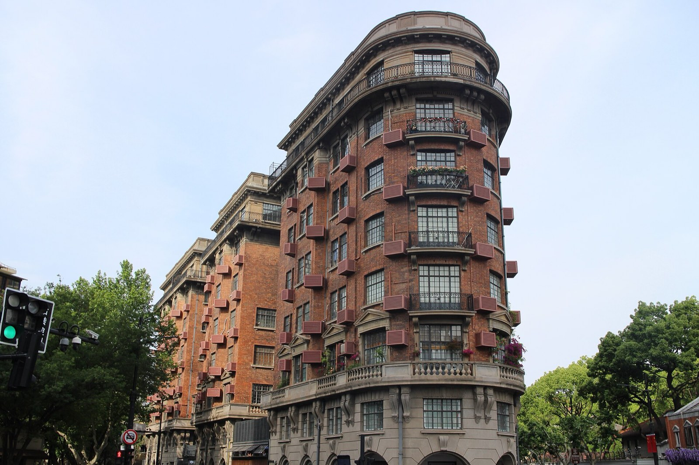
Day 11 / 12Leafy streets & a Bund farewell
Fuxing Park → Wukang & Anfu → the Bund
A full day for Fuxing Park, tree-lined streets and café breaks, with a final skyline walk along the Bund after dark.
- Late morning
Fuxing Park
Ease into the day with a park stroll and breakfast or coffee nearby.
- Afternoon
Wukang Road
Walk the tree-lined streets and pause whenever something catches your eye.
- Afternoon
Anfu Road
Continue the neighborhood wandering, with time for shops, coffee and a late lunch.
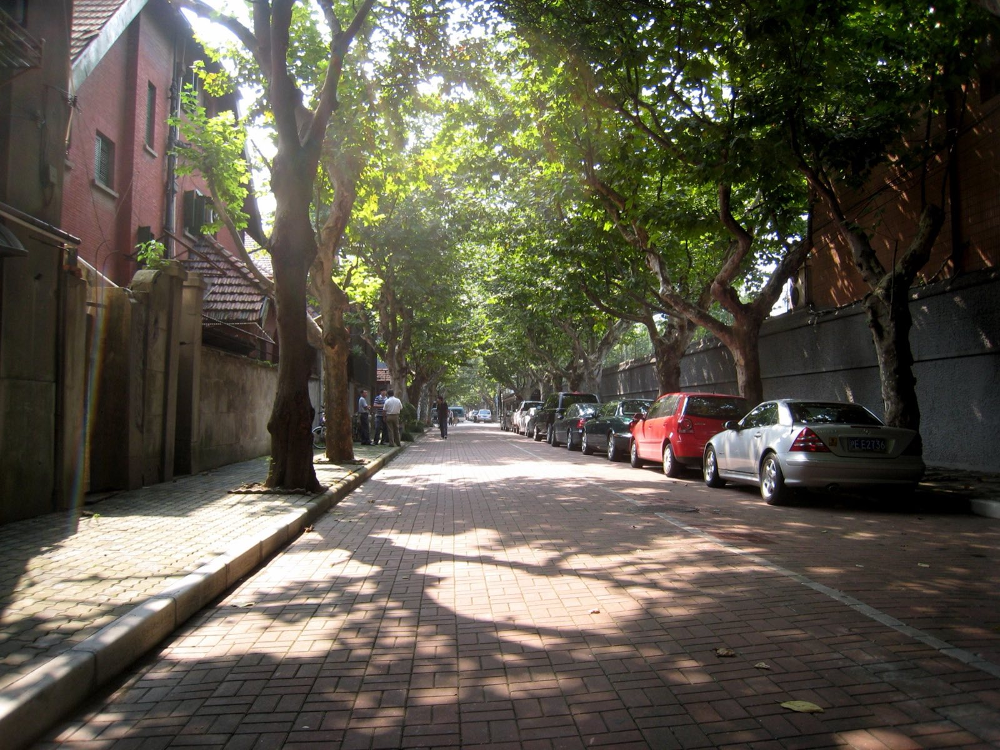
Take a taxi or metro between the neighborhood walk and the Bund. Enjoy a final Shanghai evening, then pack for tomorrow’s departure.
Overnight Shanghai
One last morning
Breakfast, a short walk & departure
If your flight leaves enough room, enjoy a final neighborhood breakfast. Otherwise, make the morning an easy airport transfer.
- If time allows
Breakfast & a neighborhood walk
Keep it close to your hotel and set a firm turnaround time based on the booked flight.
- Flight dependent
Depart Shanghai
Check out, collect bags, and leave for the correct airport with the airline’s required buffer.
No departure route is plotted: your hotel, flight time, and Shanghai airport have not been specified.
Overnight —
A few things to line up.
The route is planned; reservations are still open. These are the connections to confirm first.
- 01
Nov 16 · Hong Kong → Yangshuo
Confirm your Hong Kong–Guilin West train, then arrange the car directly to Yangshuo. Keep the afternoon walk flexible if the train arrives later.
MTR ticket information ↗ - 02
Nov 18 · Guilin → Wulingyuan
Confirm the exact Guilin departure station and train or connection to Zhangjiajie West. Prearrange the late car and hotel check-in. Stay at that same Wulingyuan hotel for Nov 18, 19 and 20.
China Railway 12306 ↗ - 03
Nov 21 · Tianmen, then Shanghai
Book the earliest suitable Tianmen slot and an early car from Wulingyuan. Arrange luggage storage or handling near Zhangjiajie, then continue to the airport. Confirm the evening nonstop flight before committing; hold the Shanghai hotel from Nov 21 for a potentially after-midnight arrival.
Tianmen operator’s route notice ↗ - 04
Nov 22 · Keep Yu Garden on Sunday
The garden normally closes on Mondays. Its current visitor page lists 16:00 last entry and 16:30 closing. After a slower start, visit the garden before exploring Pudong.
Yu Garden visitor information ↗
One hotel in WulingyuanThree nights: Nov 18–21. Two forest-park days nearby; check out with your bags before the Tianmen transfer on Nov 21.
Current Tianmen accessThe main cableway is suspended for renovation. The operator currently runs Route C via the Tianmen Cave Express cableway and escalators; recheck before booking.
Four stays, eleven nightsHong Kong · 3 nights
Yangshuo · 2 nights
Wulingyuan · 3 nights
Shanghai · 3 nights
Sharing the journeyCopy the trip link for the overview, or open a day and copy its direct link. Print trip includes every day.